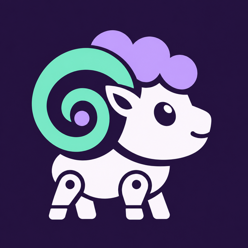

고른 방향: 시안 C(한 문장 알림 카드) + B의 양 아바타를 가볍게. 디자인 값은 docs/design-system.md. 기준 화면은 PC 브라우저(1440×900, 1280에서도 확인)이고, 휴대폰은 같은 내용의 반응형 화면이에요.
docs/design-system.md
키보드 ←/→ 로도 넘길 수 있어요. 예시 앱 이름 "모임모아"와 숫자는 PRD 4장 시나리오 문구예요. 키 값은 앞 글자만 쓴 가짜 예시예요.